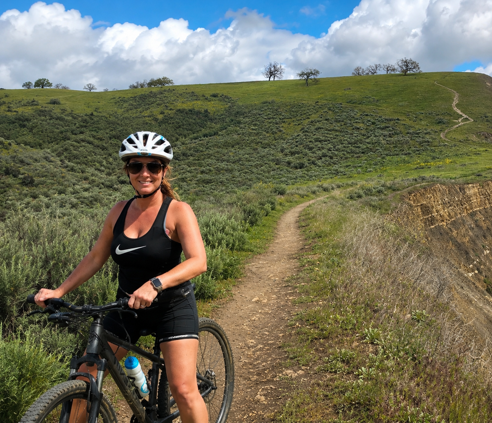
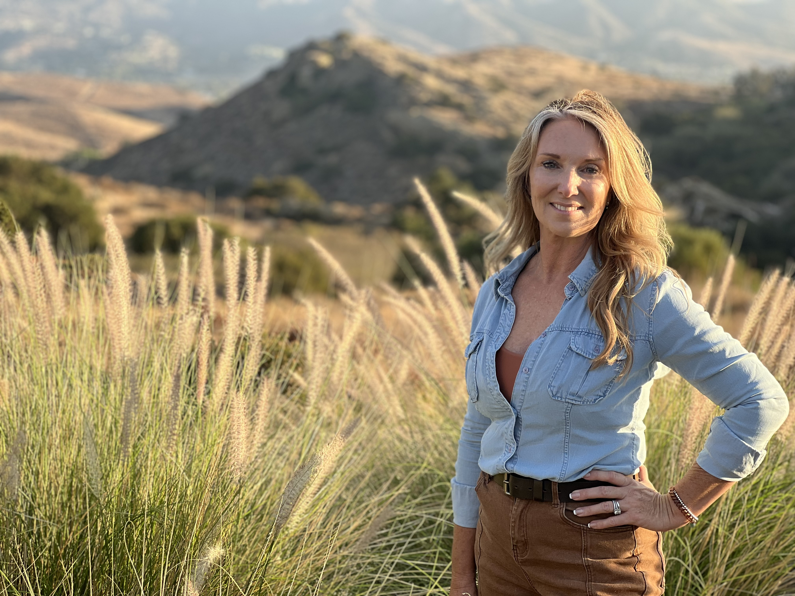
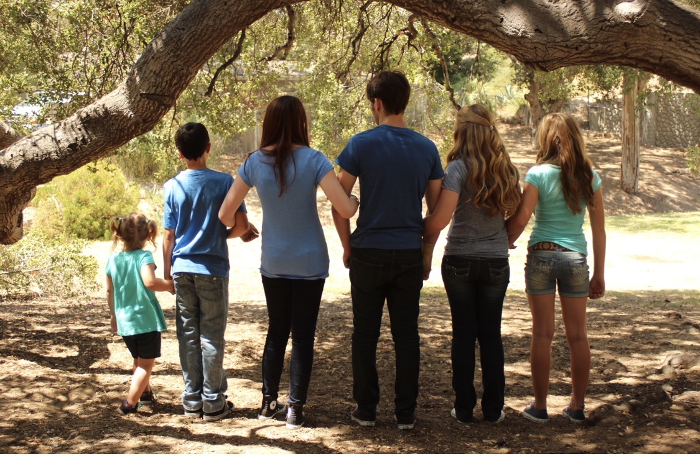
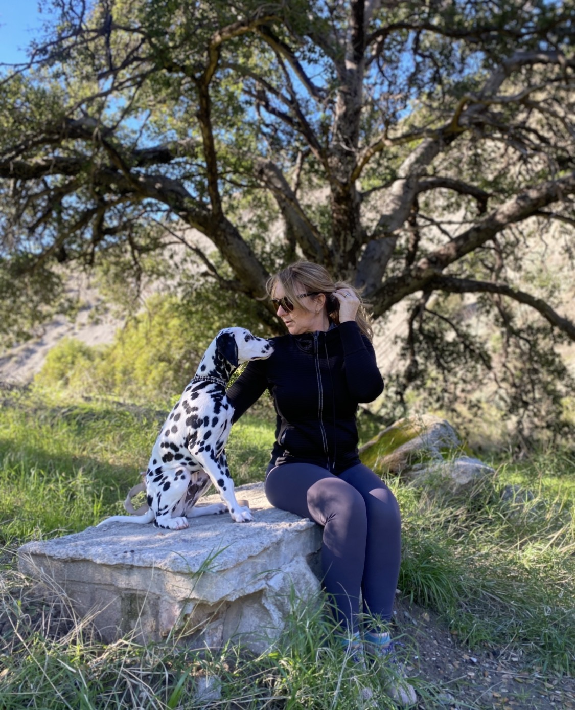
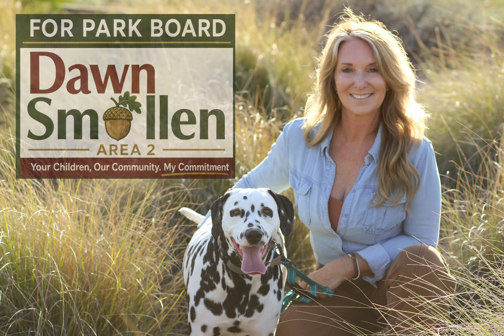
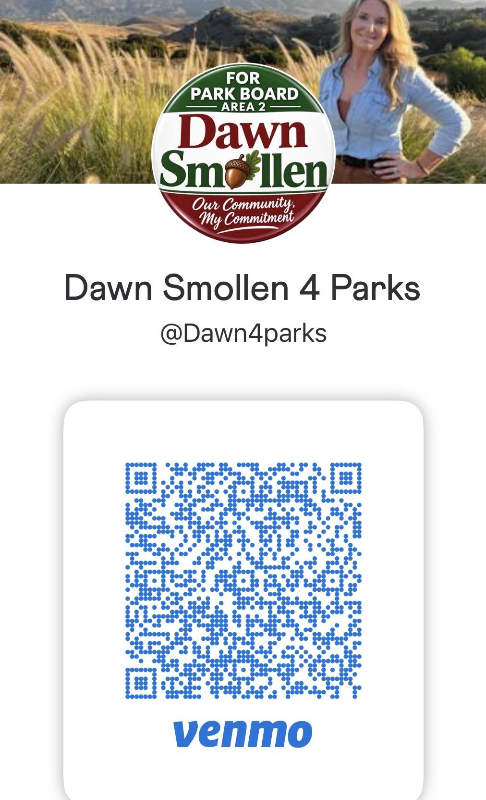
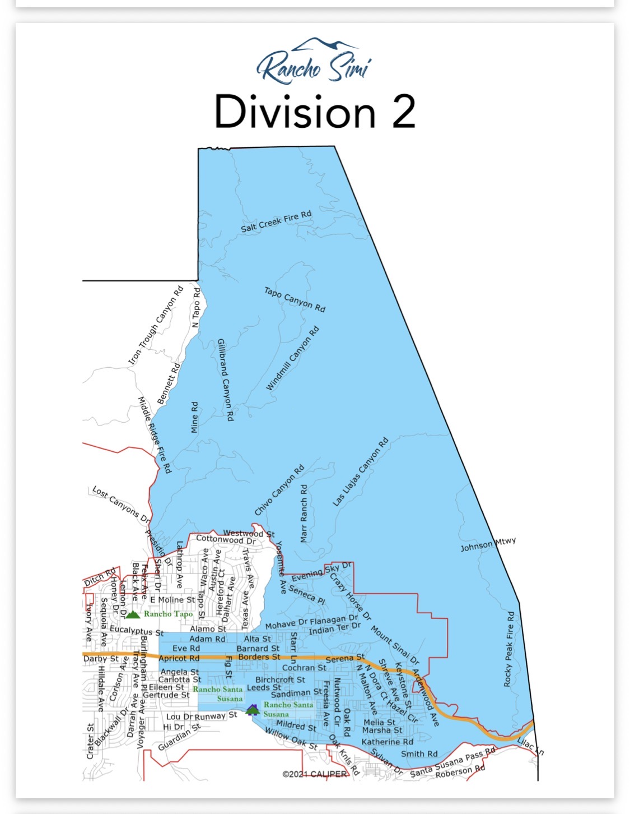

Priority 1Protect What We Have
Preserve our parks, trails, bike paths, and open spaces while keeping them safe, accessible, and maintained for future generations.
Director, Rancho Simi Recreation and Park District • Area 2

Area 2 Candidate30 years of community dedication, family values, and proven public leadership in Simi Valley.
For 30 years, Simi Valley has been home. As a mother of three, I’ve watched my children grow up in our community, attend RSRPD preschool and park programs, play sports, golf, and race at the Sycamore BMX track. Today, my family still enjoys hiking, mountain biking, and our parks and open spaces. With more than 50 parks and facilities in Simi Valley and Oak Park and over 5,600 acres of open space and recreational areas, Simi Valley is a very special place.
As Simi Valley Unified School District Board President, I have spent years working on budgets, contracts, joint-use agreements, and partnerships with the Park District to maximize public resources and expand opportunities for children and families.
With my School Board service ending due to term limits, I’m seeking election to the Rancho Simi Recreation and Park District Board. I will bring proven leadership, fiscal responsibility, transparency, and a commitment to safety, all while protecting taxpayer investments and planning responsibly so today’s resources remain available for generations to come.
I respectfully ask for your vote.
Dawn's clear, action-oriented plan for Rancho Simi Recreation and Park District.

Priority 1Preserve our parks, trails, bike paths, and open spaces while keeping them safe, accessible, and maintained for future generations.

Priority 2Projects like Phase III of the Guardian Recreation Center and rebuilding the BMX track can provide our youth with safe, productive places to gather, stay active, develop skills, and build lifelong connections. At the same time, our recreation programs, facilities, trails, and community spaces should continue providing meaningful opportunities for adults and seniors to stay active, connected, and engaged.
Bring my experience with budgets, contracts, joint-use agreements, and public partnerships to ensure taxpayer resources are used wisely and planned for long-term needs.

Priority 4Build on my years of public service by supporting safe, quality recreation opportunities for children, families, adults, and seniors while helping ensure our parks and facilities remain welcoming, well-maintained, and safe for everyone.
Coverage, announcements, and public service milestones regarding Dawn Smollen's campaign.

Grassroots support powers our campaign across Area 2!
Direct grassroots campaign contributions

@Dawn4parks →How you can help elect Dawn Smollen to the Park Board
Official district boundaries covering Area 2 / Division #2 in Simi Valley.
